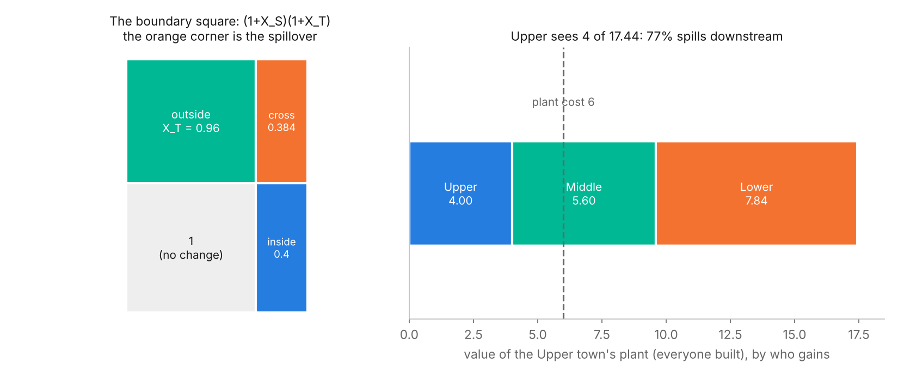
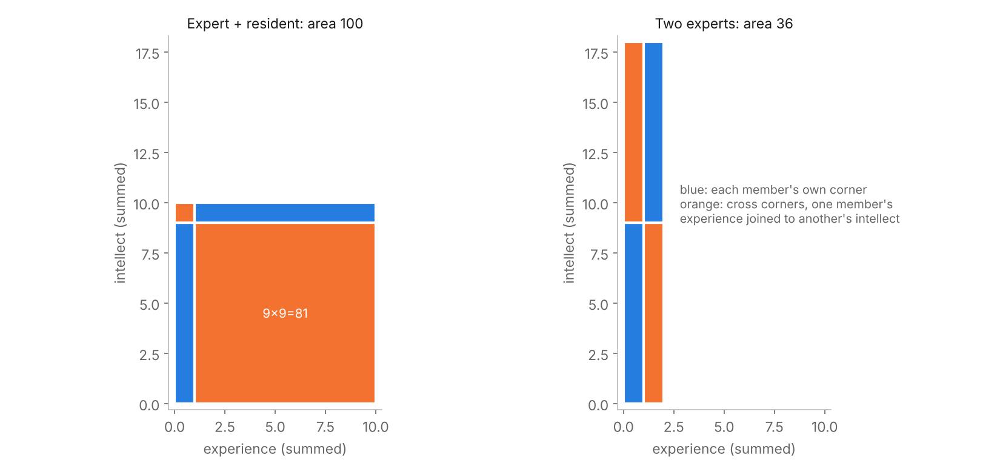
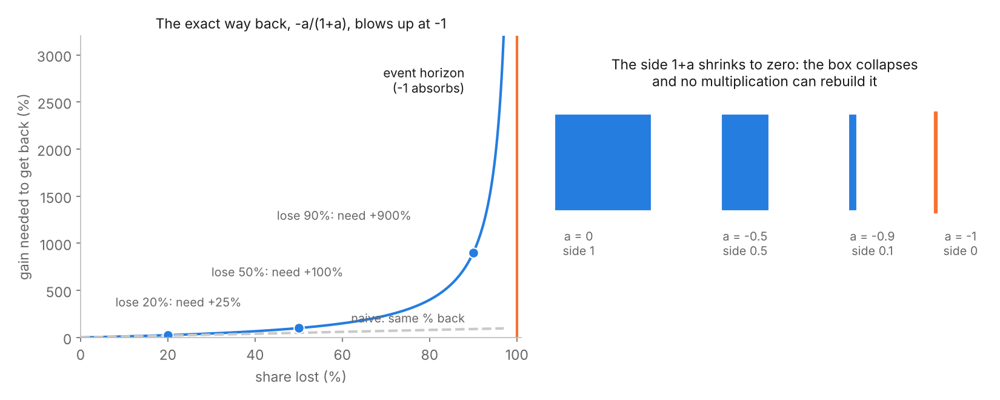
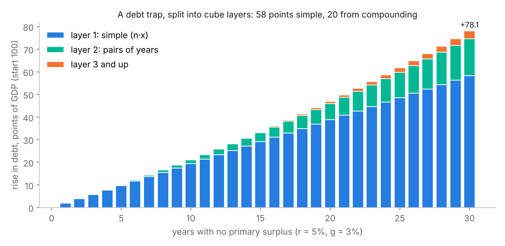

Three of Rulecraft's ideas get an exact shape. Scope matches spillover is the corner of the cube that straddles a boundary. Wisdom is the corner of a square, and a mixed panel's wisdom is mostly cross corners. The event horizon is −1, the one value the circle operation ∘₁ (called mult-add before 1.0) can never undo.
The circle operation: a ∘₁ b = a + b + ab = (1 + a)(1 + b) − 1. A number becomes a box; its pieces are the corners of a cube. Everything here is classical algebra read through Rulecraft. What may be new is the single picture.
Each Rulecraft idea, the shape it takes, and how strong the fit is
| Rulecraft idea | Shape in the algebra | Fit | What it adds beyond words |
|---|---|---|---|
| Changed together, decided together (scope matches spillover) | The cross term of the boundary square; the cube's straddling corners (Harsanyi dividends on the subset cube) | Strong | An exact definition: a body's spillover is every corner that touches its members and someone outside. For product-shaped effects that total is exactly X_S·X_T. |
| Wisdom as an area; mixed panels | The square's corner; a panel is a grid of corners (bilinear area) | Strong | Keeps "zero on either axis means no wisdom" for the corner, keeps the strips that plain multiplying throws away, and shows a mixed panel's wisdom is mostly cross corners. |
| Event horizons, reversibility, the kernel | −1 absorbs; the way back is −a/(1+a) (the circle inverse) | Strong | A proof that one value, total loss, has no way back, and a formula for how fast the way back grows as you near it. |
| The thermostat | Undoing +d with −d leaves −d² (inverse vs additive correction) | Medium | The exact correction, and the size of the error an additive thermostat leaves. |
| Debt traps; r > g | Compounding by cube layers; r ⊖ g = (r − g)/(1 + g) | Medium | Splits growth into the simple part and the compounding part, so a warning can watch the second. |
| Tensions ("each fails alone") | Balanced square: (s+d)(s−d) = s² − d² | Medium | A held-in-balance tension keeps the most corner; lopsidedness costs the square of the gap. |
| Benedict's high-synergy society | The sign of the corner weight A in a + b + A·ab | Medium | One number: A > 0 self-interest and the common good compound, A < 0 one gain is another's loss, A = 0 nothing spills over. |
| Influence with a free floor vote | The floor vote is the 1 in (1 + k) | Medium | A design choice the book hasn't named yet (below). |
| Order of reforms; path dependence | The circle operation commutes; the fused exponent rung doesn't | Narrow | Pure percentage reforms on one quantity can never be path-dependent; curvature needs more. Reforms that mix percentages and fixed amounts are path-dependent, by an oriented area, and their space is the hyperbolic plane (corrected Nov 26; see closed-leads-fresh-look, F2, and rulecraft-history). |
| Society tensor and KPIs | Main effects and interactions as cube layers, in log(1 + x) coordinates | Narrow | Same as factorial design (Yates, 1937); useful framing, nothing new. |
| Decision gravity, math and love, story, faith | None found | Weak | See weak fits. |
The boundary theorem: X(S and T) = X_S + X_T + X_S·X_T
Split everyone a decision touches into the deciding body (inside) and everyone else (outside). Stack their effects as a box. The box has four pieces: what nobody feels, what only the inside feels, what only the outside feels, and the corner where both sides change together. That corner is the spillover, and it is exactly the cross term X_S·X_T. On the cube of all the parties, it is every corner that touches someone inside and someone outside. With n parties there are 2ⁿ − 1 corners; a body holding s of them sees 2ˢ − 1 and has (2ˢ − 1)(2ⁿ⁻ˢ − 1) straddling its edge. Rulecraft's rule says: draw the boundary so the heavy corners fall inside.

Each town can build a treatment plant for 6. A plant lifts water quality 40% at its town and everywhere downstream, so qualities multiply: the Lower town's water improves by 1.4 × 1.4 × 1.4 − 1 = 1.744 when all three build. Each unit of improvement is worth 10 to the town that drinks it.
Rulecraft's contrast between taxi medallions and cap and trade falls out of the same cube. A ride a rider values at 30 and costs the driver 18 has one corner, {rider, driver} = 12, entirely inside the pair. Nothing straddles, so there is no spillover to fix, and a cap that removes 1,000 rides just deletes 12,000 of value. A shipment with surplus 30 for factory and customer also has a three-way corner {factory, customer, world} = −18 that only exists when both trade. The pair sees 30; the world nets +12. Drop the surplus to 15 and the pair still trades while the world nets −3. A cap or price of 18 pulls that corner into the pair's view: they trade only when surplus beats 18. That is Pigou, drawn on the cube.
Known parts: the corner split of a group's value is the Harsanyi dividend (1959); Oates's decentralisation theorem and Olson's fiscal equivalence are the economics. What the algebra adds: one picture, an exact spillover count for any boundary, and the circle operation as the baseline. When effects merely compound, the corners are products of the sides; a real coupling shows up as a corner weight A ≠ 1. Rulecraft's co-change test is the recipe for measuring those corners from the decision log, using the cube's alternating signs (Möbius inversion) to pull them out of group totals.
The square (1 + e)(1 + i) − 1 = e + i + ei, and the panel grid (Σe)(Σi)
Rulecraft already models wisdom as an area: experience times intellect, zero if either is zero. The fused square keeps that claim for its corner, ei, and also keeps the two strips, e and i, which plain multiplication throws away. So a brilliant person with no experience scores 10 in strips and 0 in wisdom, instead of vanishing. That is the same complaint about 0 × 4 = 0 that started the theory.

On a 0 to 10 scale, an expert is (experience 1, intellect 9) and a resident who has lived the problem is (9, 1). Each alone has a wisdom corner of 9.
This puts a number on Rulecraft's line that a panel "covers more area than any member", and says why mixing beats sameness: for a fixed total, the square beats the strip.
−1 absorbs: (−1) ∘₁ b = −1. Everywhere else, the way back is ⊖a = −a/(1 + a)
The circle operation has a way back from every change but one. Lose everything (a = −1) and the box's side becomes zero; no later change can rebuild it, because (−1) ∘₁ b = −1 for every b. That is Rulecraft's event horizon in one line, and the kernel's job is to forbid steps to −1: abolishing elections, removing a group's rights. Near the horizon the way back grows without limit, which is why the thermostat must warn early.

| Lost | Gain needed to recover |
|---|---|
| 20% | 25% |
| 50% | 100% |
| 90% | 900% |
| 99% | 9,900% |
| 100% | none exists |
A KPI drifts up 25%. Pulling it down 25% leaves it 6.25% low, because d ∘₁ (−d) = −d², the drift's corner square. The exact correction is −20%. At a 10% drift the additive error is 1%; at 50% it is 25%.

Interest r = 5%, growth g = 3%. The debt ratio grows each year by r ⊖ g = (r − g)/(1 + g) = 1.9417%, not 2%. At 100% of GDP, holding steady takes a primary surplus of 1.94% of GDP. With none for 30 years the ratio reaches 178.1%. On the 30-axis cube the rise of 78.1 points splits into 58.25 simple (layer 1), 16.40 from pairs of years, 2.97 from triples and 0.4 above that.
Intuition sees layer 1. The trap is layers 2 and up, which grow like (n − 1)x/2 times layer 1. A thermostat can watch that ratio directly. Piketty's r > g is the same arithmetic run on wealth.
Real but narrower; each is checked in the files
Where the algebra adds a picture but no new content
Core Lean 4, no mathlib; every identity also checked with sympy
RulecraftFused.lean is written but not yet compiled. Installing Lean was refused in this session, so the file is unchecked. Every identity it states was checked symbolically in checks.py, so a failure would be a proof-script slip, not a false statement. It proves:
boundary, foldCirc_append: the whole is inside ∘₁ outside, cross term X_S·X_Tone_add_foldCirc_eq_corners: 1 + (x₁ ∘₁ … ∘₁ xₙ) is the sum over every group of parties of the product of their effects (the cube's corners)foldCirc_perm: any reshuffle of the same effects gives the same total; fexp_not_comm: the fused exponent rung doesn't commuteneg_one_absorbs, no_way_back, way_back, recovery: the event horizon and the exact way backthermostat_residue, panel_grid, balance, balance_le, weighted_conj, fused_price_stepCompounding by layers, (1 + x)ⁿ = Σ C(n,k) xᵏ, is already proved in topology/lean/CubeProofs.lean.
Files in math-theory/rulecraft: checks.py and checks_output.txt (every number on this page), figures.py and figures/ (five plates), lean/RulecraftFused.lean. Rulecraft passages read from the working notes doc: The role of government, Principles, Wisdom (opening), Coupling, the influence and thermostat passages, and the mathematical foundations toolkit.